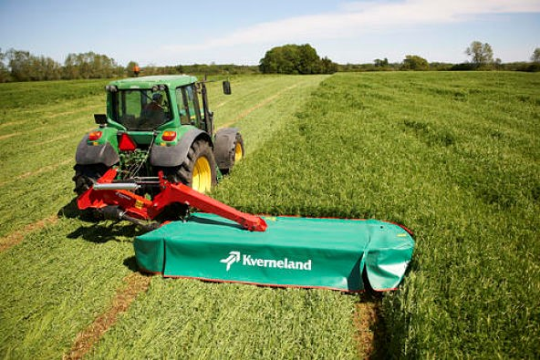
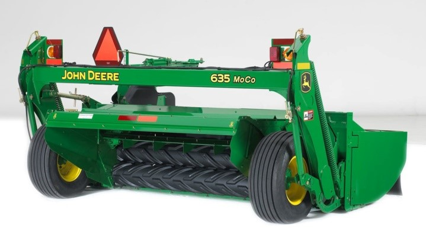
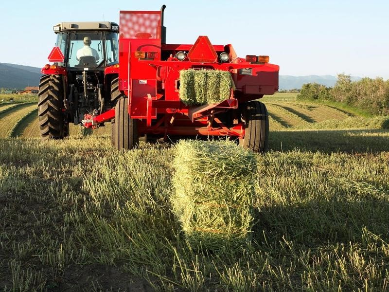
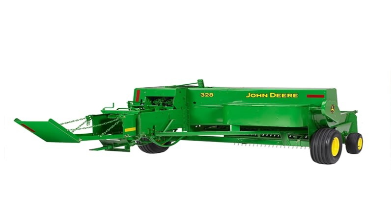
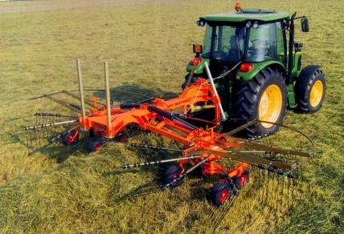

Métodos forrajeros
La planificación forrajera es clave para la productividad y rentabilidad del hato, sin embargo, muchas veces dichos recursos se
manejan sin cuantificar adecuadamente la disponibilidad de los mismos.
Hoy día existen diversas tecnologías que facilitan cumplir estos objetivos. Por ejemplo, la información espectral provista por
sensores remotos o proximales ha sido un método difundido para el monitoreo de pasturas en diversos ecosistemas y regiones debido
a que brindan una amplia cobertura espacial. La misma se combina de diversas maneras obteniendo índices de vegetación.
Drones
Entre los instrumentos usados para obtener el IVN, se encuentran los drones, los cuales se han comenzado a difundir dentro de
los sistemas agropecuarios dado que permiten capturar variaciones espaciales a nivel de predio comercial con elevada resolución,
rapidez y relativo bajo costo.
Maquinaria
Segadoras

Su función principal es la siega del forraje a una determinada altura sobre el suelo, realizando un corte limpio que facilite el rebrote
de la hierba, y evitando que se contamine con tierra y que se produzca el embozado de los elementos de corte.
Son máquinas diseñadas para enganche en el tripuntal del tractor, que a su vez acciona los mecanismos de la máquina. Los dispositivos
de corte se sitúan lateralmente respecto al tractor, o en el frontal (enganche delantero), para evitar que se pise la hierba antes del segado.
La siega se realiza mediante alguno de los siguientes dispositivos:
-
Sistema de cuchilla y contra cuchilla o doble cuchilla alternativa
-
Cuchillas situadas en varios discos o tambores que giran alrededor de un eje vertical.

Normalmente se utilizan de 2 a 4 cuchillas por disco.
Los tambores son de mayor diámetro, su accionamiento desde arriba y se montan por parejas girando en sentido inverso. Los discos son de menor
diámetro y se accionan desde abajo. Las velocidades de rotación están entre 1000 y 3000 rev/min para conseguir velocidades periféricas de las
cuchillas entre 60 y 90 m/s.
El sistema de acondicionado está situado inmediatamente detrás de los elementos segadores, de manera que todo el forraje pase a ellos. Puede
realizarse por:
-
El aplastamiento o el plegado de los tallos al pasar entre rodillos con diferente rugosidad superficial. La velocidad periférica de los
rodillos está sobre los 10 m/s y el efecto de acondicionado aumenta por la presión entre los rodillos.
-
La laceración que se produce entre el propio forraje y los elementos que lo impulsan.
El forraje acondicionado se dirige mediante pantallas para que quede en forma de cordón esponjado permeable al aire para favorecer la pérdida
de agua. En ocasiones las salidas se orientan, o se utilizan cintas transportadoras, para agrupar el forraje de varias pasadas en un solo cordón.
Empacadoras

Una empacadora o enfardadora es un implemento al tractor que funciona mediante el PTO/TDF, es una herramienta que trabaja sobre restos de poda,
corte o cosecha realizados generalmente con una segadora, el forraje sobre el cual se trabaja generalmente debe ser previamente hilerado en un
cordón mediante un rastrillo hilerador. Su función es la de recoger y empacar la hierba/forraje seco, húmeda o la paja formando pacas (forma
prismática o cilíndrica) con peso y dimensiones que hacen más fácil y eficiente su manejo y transporte para la futura alimentación del ganado.
La vegetación cortada, como alfalfa, trébol o heno, se corta y se deja en el campo en una franja estrecha conocida como hilera. Un tractor que
tira de la empacadora se mueve a lo largo de la hilera, donde una fila de dientes rastrilla el material cortado del suelo.
El mecanismo interior mantiene el alimento bajo presión para comprimirlo y continúa agregando material hasta que la paca tiene el tamaño deseado.
La paca se envuelve con hilo o redes o alambre para asegurarla. En las aplicaciones agrícolas, básicamente se utiliza este proceso para la conservación
de forraje para épocas de escasez .
Empacadora convencional

Este tipo de máquinas son las más apropiadas para explotaciones de pequeño tamaño. Son máquinas arrastradas, con un peso entre 1.000 y 2.000 kg.
Reciben la potencia a través de la toma de fuerza del tractor, que debe tener una potencia superior a los 60HP para un trabajo óptimo.
Su función principal es la Recogida y empaquetado de la hierba seca (heno) y de la paja, para formar paquetes prismáticos (pacas cuadradas o
rectangulares) con peso y dimensiones que hacen posible su manejo manual. Trabajan sobre el material previamente hilerado en un cordón.
La base de la máquina es el canal de compresión, de sección cuadrada o rectangular este canal se alimenta lateralmente, y es recorrido por un
pistón en movimiento que presiona el material a las paredes del canal.
La alimentación se realiza desde un recogedor de dedos (pick-up) que eleva el forraje desde el suelo hasta una cámara lateral y luego al canal
de compresión, por medio mecanismos como horquillas, o tornillos sin fin.
El atado del paquete se realiza mediante hilo con dos o tres anudadores. Las agujas con el hilo actúan para atravesar el canal de compresión
hasta los anudadores que se encuentran en la parte superior. La longitud de la paca se puede modificar entre con un proceso de calibración
bastante sencillo.
El accionamiento de la empacadora se realiza con la toma de fuerza del tractor.
Rastrillos

Función principal
-
Formar cordones recogiendo la hierba esparcida en el campo.
-
Unir varios cordones pequeños en otro mayor.
-
Esparcir el forraje para acelerar su secado.
-
Voltear los cordones de manera que queden expuestas al sol las partes más húmedas.
Su acción se fundamenta en el movimiento de unos elementos metálicos (púas o dedos) capaces de barrer de modo continuo el forraje.
En función de las características de los soportes que fijan los dedos se establecen tres grupos:
Montaje sobre barras rectas (rastrillos de molinete horizontal y oblicuo).
Montaje radial en un eje giratorio (rastrillos de soles y rastrillos de molinete vertical o giroscópicos).
Montaje sobre transportador sin-fin (rastrillos de cadena o correa transversal).
La actuación del rastrillo depende de la trayectoria que siguen los dedos: los cambios bruscos de dirección pueden provocar la pérdida de hoja.
|